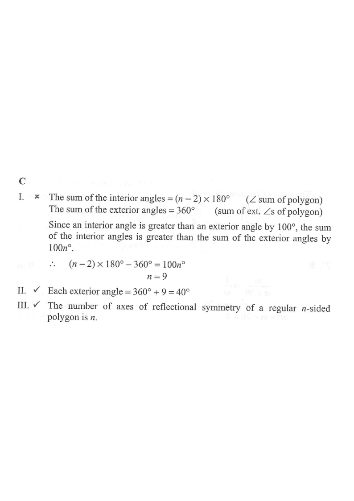

If an interior angle of a regular n-sided polygon is greater than an exterior angle by $100^\circ$, which of the following are true?

For a regular polygon, at each vertex the interior angle and the exterior angle form a straight line, so they add to $180^\circ$:
$$\text{int} + \text{ext} = 180^\circ$$
The condition says the interior angle exceeds the exterior angle by $100^\circ$:
$$\text{int} - \text{ext} = 100^\circ$$
Adding the two equations:
$$(\text{int}+\text{ext})+(\text{int}-\text{ext})=180^\circ+100^\circ$$
$$2\,\text{int} = 280^\circ \;\Rightarrow\; \text{int} = 140^\circ$$
Then $$\text{ext} = 180^\circ - 140^\circ = \mathbf{40^\circ}.$$
So statement II is true.
The exterior angles of any convex polygon sum to $360^\circ$, and in a regular polygon all $n$ exterior angles are equal:
$$n \times \text{ext} = 360^\circ$$
$$n \times 40^\circ = 360^\circ \;\Rightarrow\; n = \frac{360}{40} = \mathbf{9}$$
So statement I (saying $n=10$) is false — the polygon has $9$ sides, not $10$.
For a regular $n$-sided polygon with $n$ odd, every axis of symmetry passes through a vertex and the midpoint of the opposite side. The number of axes equals $n$:
$$n = 9 \;\Rightarrow\; \text{axes of reflectional symmetry} = \mathbf{9}.$$
So statement III is true.
Statement I: False · Statement II: True · Statement III: True.
Hence II and III only are true, which corresponds to option C.